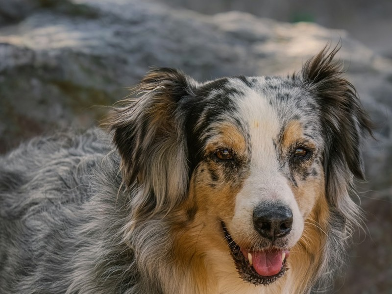
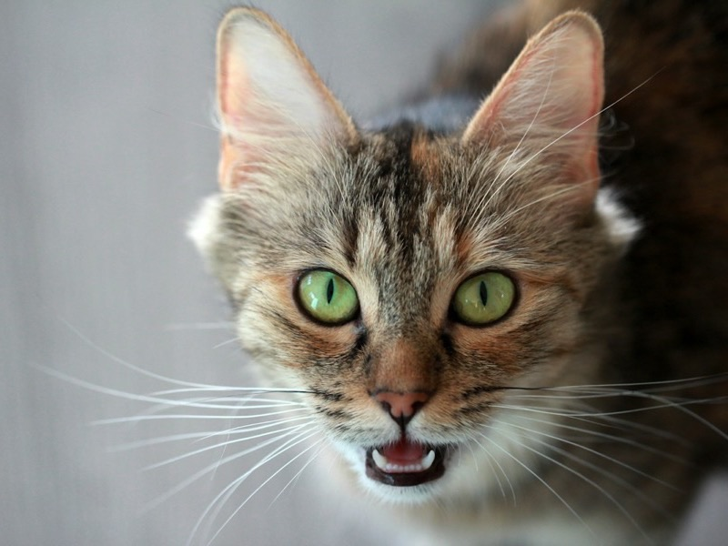

Accueil / Adopter
Adopter un animal
Trouvez votre futur compagnon. Chaque animal mérite une famille aimante.
Nos chiens et nos chats
Découvrez nos six animaux disponibles à l'adoption.
-
-

-

-

-

-

Simba
Chien 6 moisCaractère : joueur et énergique.
Il a besoin d'attention et de jeux.
Adopter Simba
Les étapes de l'adoption
- Choisissez un animal.
- Remplissez le formulaire de demande.
- Le refuge étudie votre demande.
- Une rencontre est organisée avec l'animal.
- Le refuge vous explique les dernières démarches.
Les frais de participation
Les frais d'adoption participent aux dépenses vétérinaires, à l'identification et aux soins des animaux.
Le montant exact est communiqué par le refuge.
Faire une demande d'adoption